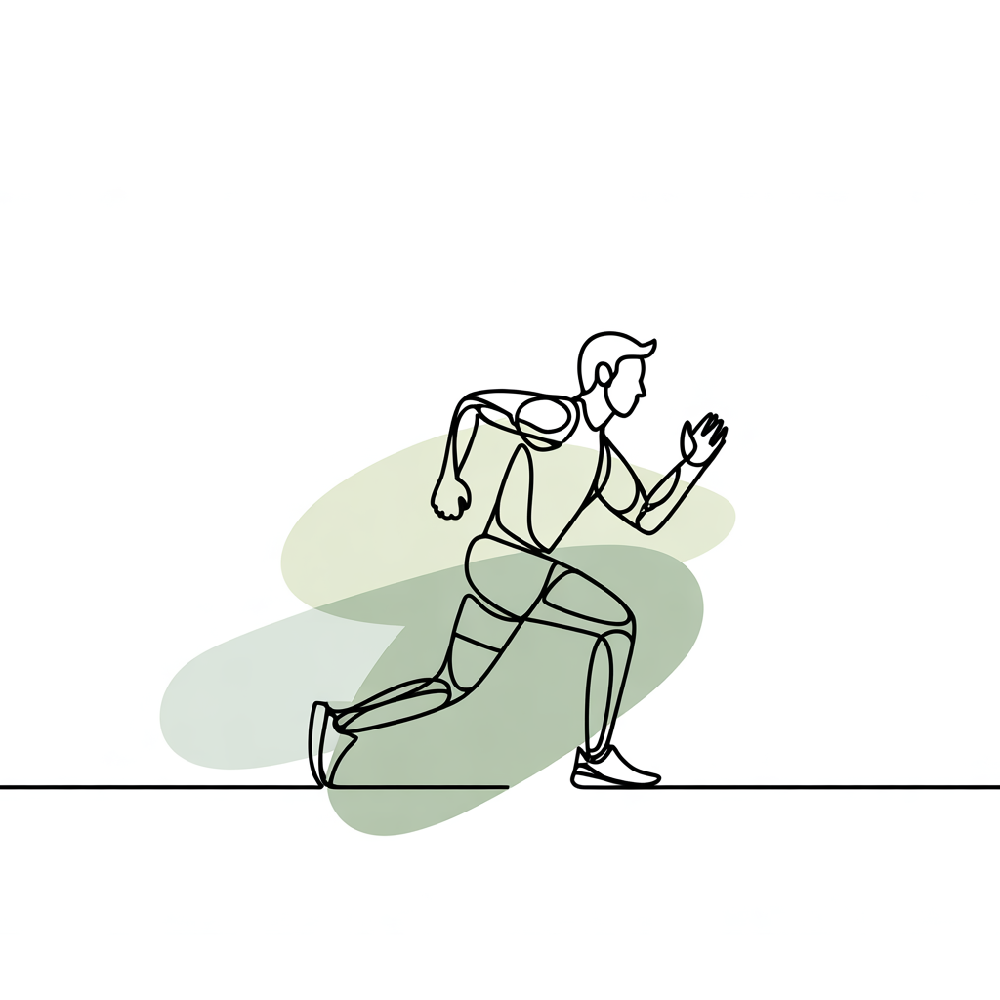

About Phrona
Phrona is a combined dietetics and physiotherapy practice focused on lifestyle, recovery,
nutrition, movement and behavioural change. Guidance is practical, individually tailored
and aligned with existing primary care treatment plans.
Practice name: Phrona Health
Location: Banstraat 29, 1071 JW Amsterdam
E-mail: info@phrona.nl
Phone: 06 17 66 06 35
WhatsApp: 06 17 66 06 35
Siilo: Available for secure transfer of patient data
Read more about our philosophy
Communication & reporting
For referred clients, we aim to provide an initial and final report, provided there is consent from the client.
The intake begins by identifying the client's needs, followed by a personalised treatment plan
with measurable goals and follow-up consultations for monitoring and adjustments.
Communication preferably takes place through secure channels such as Siilo.
You may send the completed referral form via Siilo or provide it to your client.
Download the referral form
Collaboration
Do you have patients who would benefit from guidance by a dietitian?
Is your practice looking for a dietitian on location? We are open to collaboration at your practice.
Please contact us at info@phrona.nl to discuss the possibilities.
Indications for referral
Phrona offers combined dietetic and physiotherapeutic guidance. Referral is suitable for:
Dietetics
- Overweight and obesity
- Type 2 diabetes and prediabetes
- Recovery after injury or illness
- Hypercholesterolemia, hypertension, metabolic syndrome
- Undernutrition or unintended weight loss
- Gastrointestinal complaints (IBS, ulcerative colitis, etc.)
- Lifestyle coaching for fatigue and stress
More about dietetics

Physiotherapy
- Recovery from musculoskeletal complaints
- Posture and movement analysis
- Rehabilitation training after injury or surgery
- Training progression in exercise programmes
- Sports injuries and overuse complaints
More about physiotherapy
There is currently no waiting list. Appointments are usually
scheduled within one week.